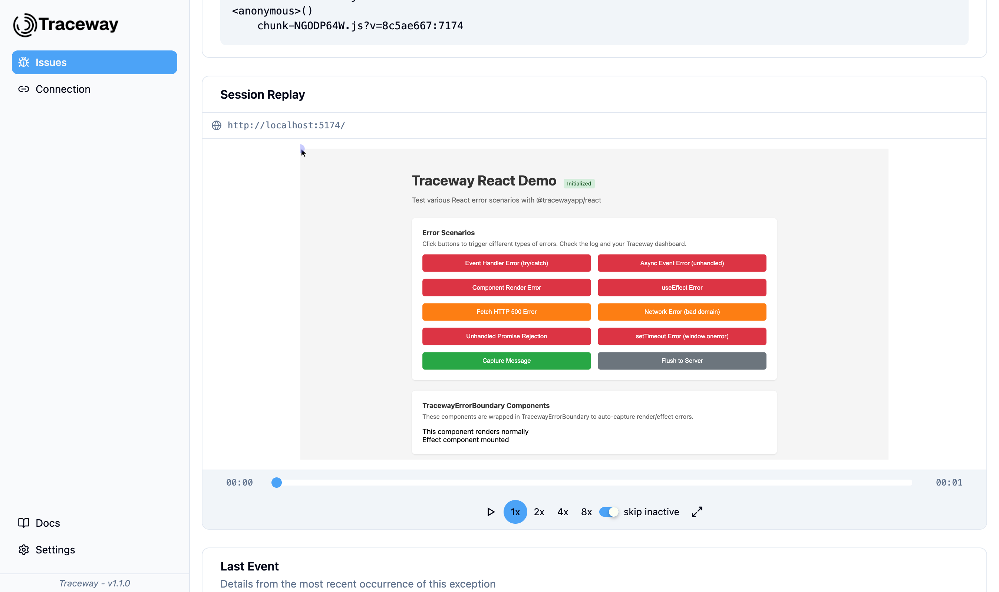
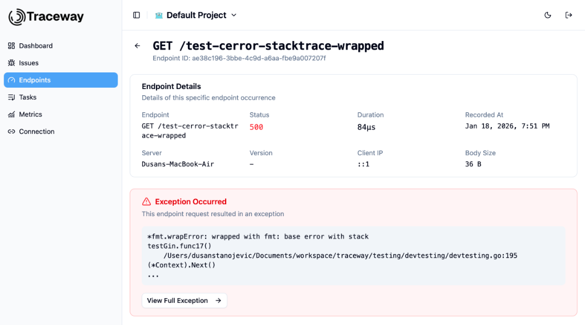

Point your OTLP exporter at Traceway and you're done. Any language, any framework — the full observability stack, at a fraction of Datadog's cost.
Structured, trace-linked, sub-second search.
End-to-end span waterfalls across every service.
Host, runtime, custom — any dimension, any chart.
If it can export OTLP, it works with Traceway. No proprietary SDK, no agent per host, no lock-in tax. Paste one endpoint, ship.
Traceway captures ~10 seconds of DOM activity before every error. Clicks, scrolls, form interactions, page transitions — all attached to the exception automatically. No reproduction steps. No "works on my machine."

When a backend service returns an error, Traceway links it to the frontend session replay that triggered the request. Every span, exception, and replay is stitched by a shared trace ID — so a single click in the UI walks your full system.

Traceway runs on ClickHouse columnar storage — 1M daily events compresses to ~2GB/month. We pass that efficiency on. Fixed monthly tiers, no per-event gouging, no overage invoices at 2am.
MIT licensed. No BSL. No "open core." Every feature Traceway Cloud has, your cluster has. Point an OTLP exporter at it and you're in business.
Traceway consolidates exception tracking, performance, replay, traces, logs, and AI observability behind a single login and a single bill.
10-step stack normalization + SHA-256 hashing. Identical logical errors always group together, even when addresses, UUIDs, and timestamps differ.
Tracks cost, tokens, latency, and full conversation content for OpenAI, Anthropic, OpenRouter, and any OTel-compatible provider. Zero code changes.
Route by impact threshold, service, or tag. Your on-call doesn't change — just starts getting fewer false positives.
Goroutine counts, queue depth, business KPIs. One function call to emit, drag-and-drop to chart.
Every log line carries its trace ID. Click a span, see its logs. Click a log, see its span. Both directions.
Same treatment as HTTP. Duration, failure rate, stack traces — in their own dashboard.
Two reasons. One: we store telemetry in ClickHouse, which compresses ~400× better than row-oriented stores Datadog uses for the same data. Two: we don't meter per event, per host, per custom metric, per ingested byte, per user, per APM seat, and per everything else. Fixed monthly tier, or free self-hosted. That's the pricing page.
Correct — as of 2026, we're the only observability platform shipping a native Flutter session replay SDK with widget-tree aware recording. Sentry has breadcrumbs for Flutter. Datadog has RUM without replay. Traceway records the full rendered widget tree with masking, scrubbing, and automatic exception attachment.
Yes. MIT license, no feature gating, no "community edition" asterisks. docker compose up -d and you're running the same code that powers Traceway Cloud.
Native SDKs for Go (Gin, Chi, Fiber, net/http), JavaScript (Node, NestJS, React, Vue, Svelte, Next.js, Remix), Dart/Flutter, and PHP (Symfony). Any OpenTelemetry-compatible language — Java, Python, .NET, Ruby — exports to Traceway over OTLP without a proprietary SDK.
It's the max of five service-level signals: inverted Apdex, error rate floor, P99 floor, client-error floor, and volume × error. One bad signal and the endpoint surfaces. You can tune the latency threshold per-endpoint so an analytics route and a checkout route don't share a single definition of "slow."
No. Fixed-price tiers with no overage charges. If you approach your included volume, we email you first. Your bill doesn't change without your explicit approval, ever.
Ship your next production fix with the session replay in one tab and the distributed trace in the other. Same window.